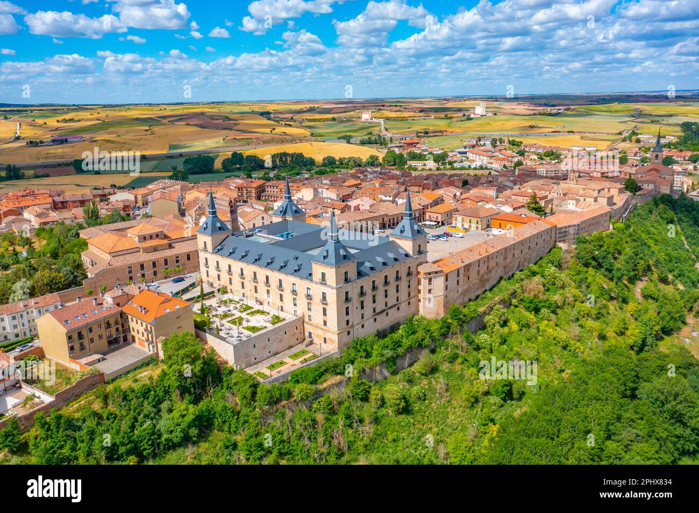
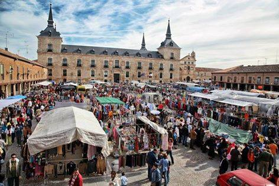
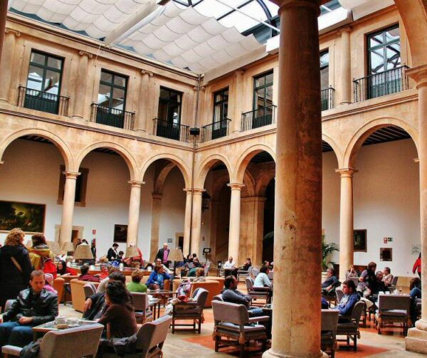
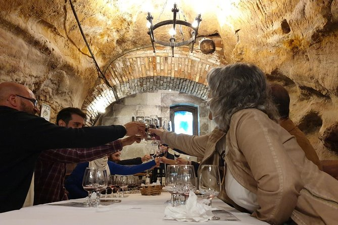

Lerma
Lerma es un municipio en la provincia de Burgos, Castilla y León, España. Conocida como la Villa Ducal de Lerma, esta localidad destaca por su impresionante patrimonio histórico y arquitectónico. Situada en un enclave estratégico sobre una colina con vistas al río Arlanza, Lerma es un destino lleno de historia y encanto. Su legado monumental se debe en gran parte a Francisco de Sandoval y Rojas, Duque de Lerma y valido del rey Felipe III, quien transformó la villa en un centro de poder y esplendor en el siglo XVII.
Hoy en día, pasear por Lerma es adentrarse en un escenario de siglos pasados, con su majestuosa Plaza Mayor, una de las más grandes de España, su imponente Palacio Ducal convertido en Parador Nacional, y la Colegiata de San Pedro, joya del patrimonio religioso. Además, la localidad es famosa por su rica gastronomía, donde destacan los asados tradicionales y los vinos de la Ribera del Arlanza.
Si buscas un destino donde historia, arte y gastronomía se entrelacen en un ambiente único, Lerma es el lugar perfecto.🍷🏰

3 actividades en Lerma
1.Mercadillo

2.Colegiata de San Pedro

3.Entrada a la cava histórica de Don Carlos con degustación de vino.

Dónde está y cómo llegar a Lerma en Burgos
Lerma se encuentra a 200 kilómetros al norte de Madrid, desde donde llegas en 2 horas por la A1, y a solo media hora al sur de la ciudad de Burgos.
|
social-icons